ID Finder
23,000+ items and spells searchable by name — the id you need for a note, a WeakAura or a macro, in one search.
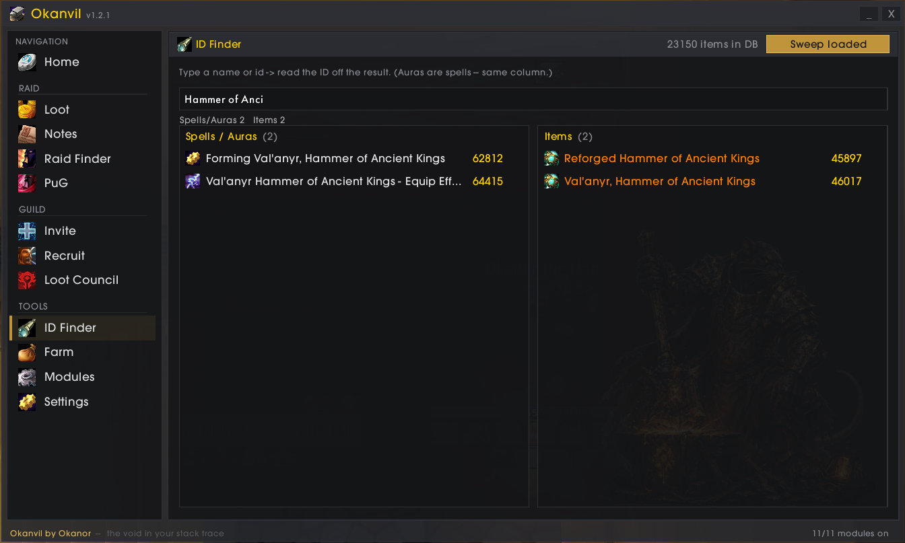
WotLK 3.3.5a · Warmane
Okanvil is the raid & guild toolkit RATS forged for itself: PuG building, loot council, loot history, raid notes and recruiting — in one window, instead of eight addons that don't talk to each other.
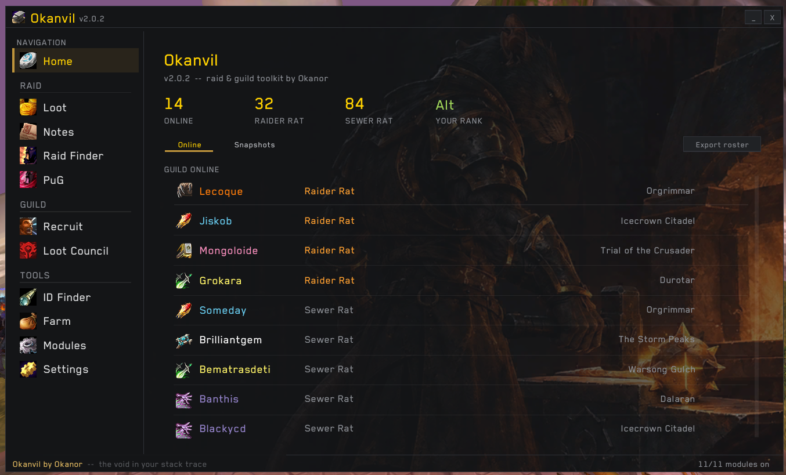
Spamming trade, counting heals in your head, retyping the LFM every time someone joins, scrolling whispers to find who said "rsham 5.8k"… Okanvil does the bookkeeping.
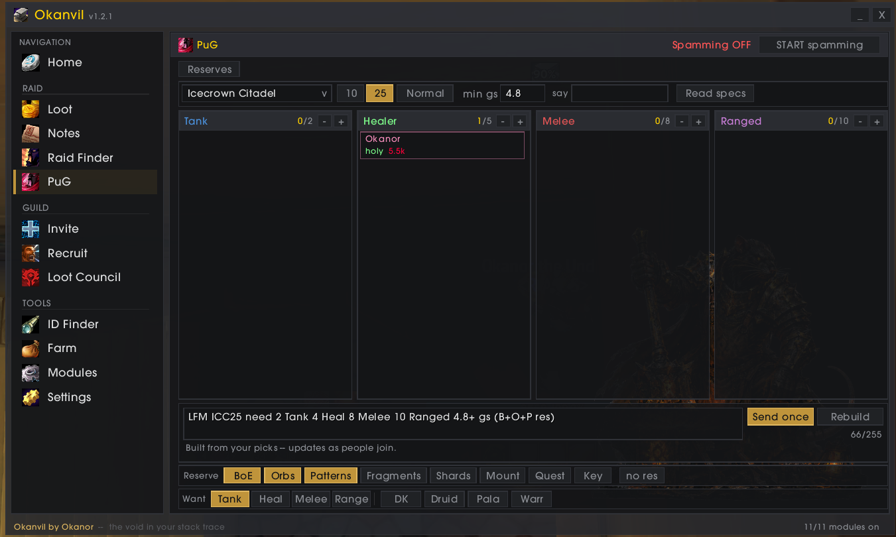
Every LFM in chat becomes one clean row: raid, GS, the roles they still need, whether loot is reserved and what is reserved — and whether you're already saved there.
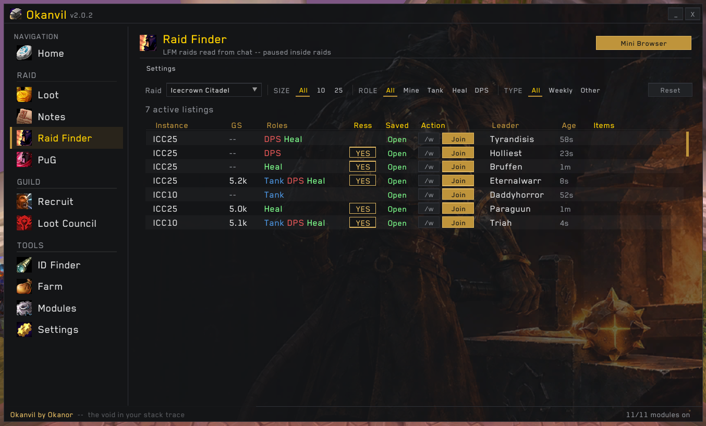
The master looter picks the items, every raider answers BIS · Upgrade · Small · OS · Pass in a popup, and the council sees each answer next to what that raider is wearing — ilvl gap included.
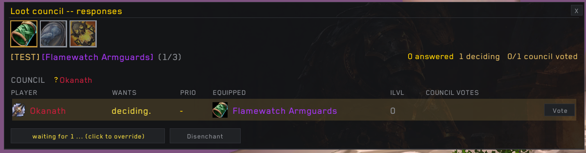
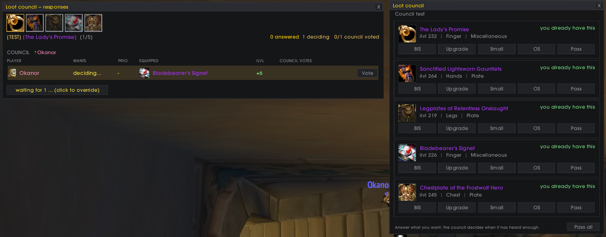
Every drop, every boss, every night — who got it and how: MS roll 87, council · BIS, or disenchanted. The Mini Roll window runs the roll-off and records the winner for you.
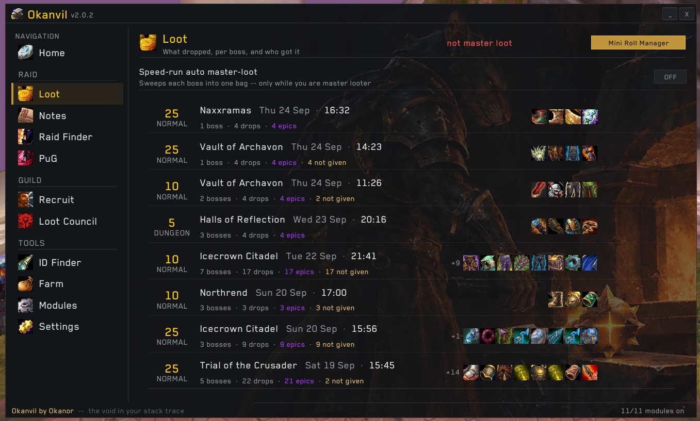
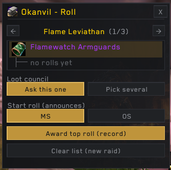
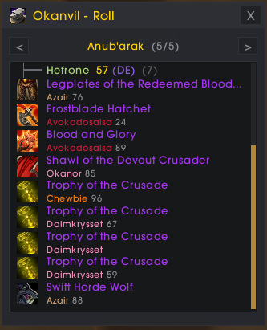
At the first pull Okanvil takes a snapshot of the raid: every group, every player, their real spec — scanned, not guessed — and who was main tank. Attendance without anyone keeping a spreadsheet.
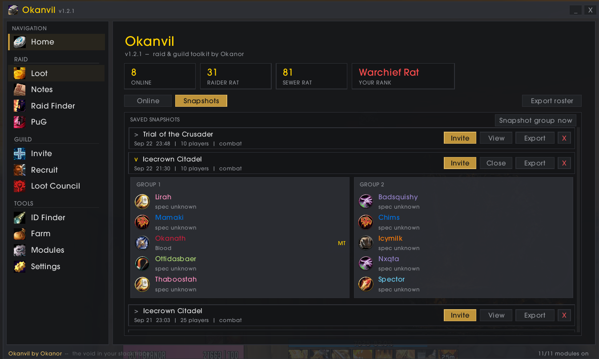
MRT-format notes per boss, size and difficulty. Timed lines count down in the fight and light up for the person they name — no more "who's on infest 3?".
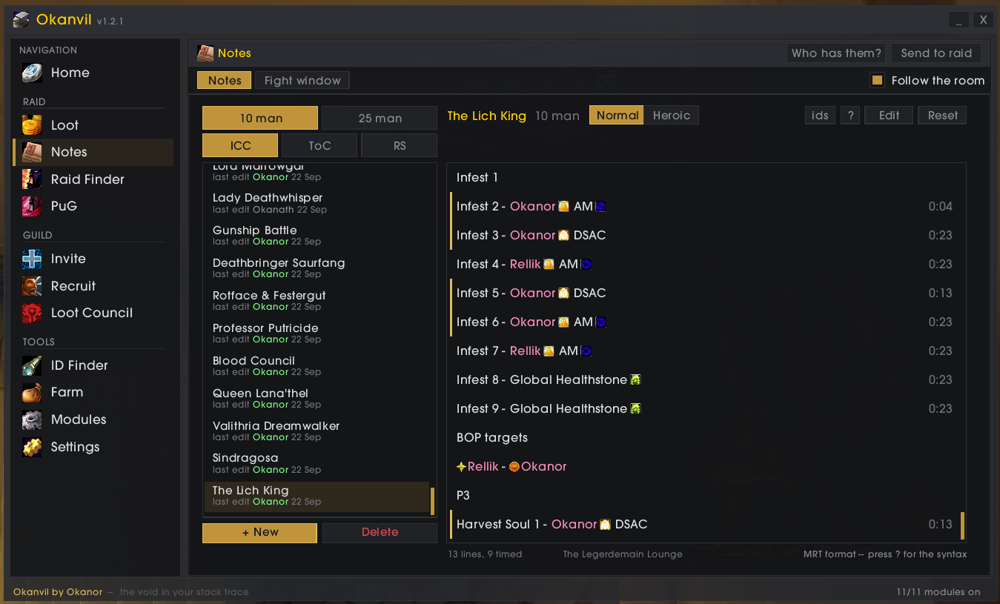
Your advert goes out on its own. Whisper inv and you're guild-invited; ask anything else and you get the Discord link — even when you're AFK. Every conversation lands in an Inbox, so nobody who answered gets lost.
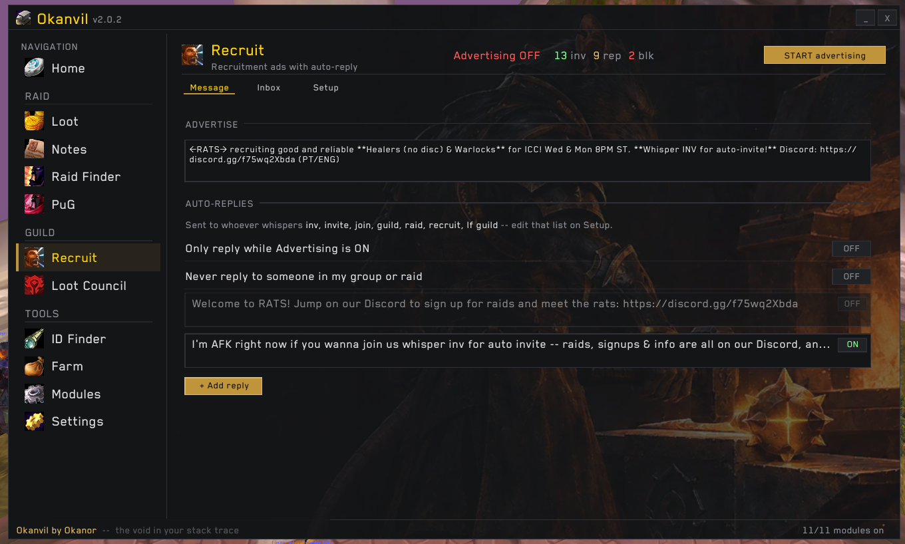
Things you only notice when they're missing.
23,000+ items and spells searchable by name — the id you need for a note, a WeakAura or a macro, in one search.

Gold per hour while you farm: vendor, AH value, coin drops and kills.
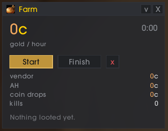
Who is missing flask, food or buffs, before the pull.
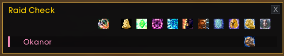
Hover the minimap button: every character's raid lockouts in one grid — 10, 25, heroic — and when they reset. No logging alts in and out to check who's still free.
| Okanor | Okanath | |
|---|---|---|
| ICC | 25H | 10 |
| ToGC | 25 | — |
| RS | — | 25 |
Raid marks, ready check, pull timer and a shortcut to every Okanvil page, in one bar.
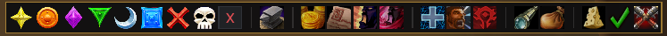
Works on the normal and HD 3.3.5a clients. Turn off any module you don't want in Modules — the
rest stays out of your way.
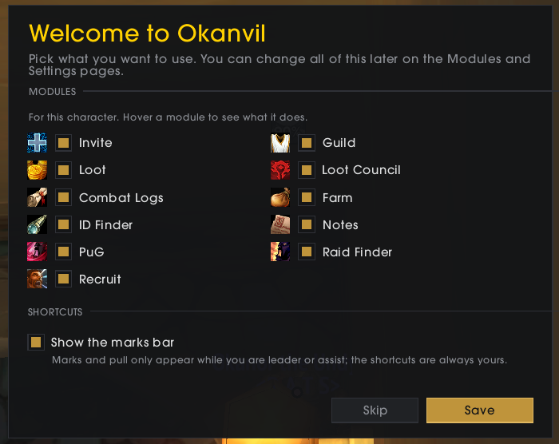
World of Warcraft\Interface\AddOns\Okanvil — if the
folder ends in -main, rename it./okanvil any
time.